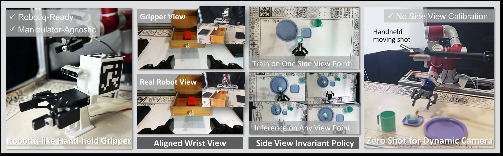
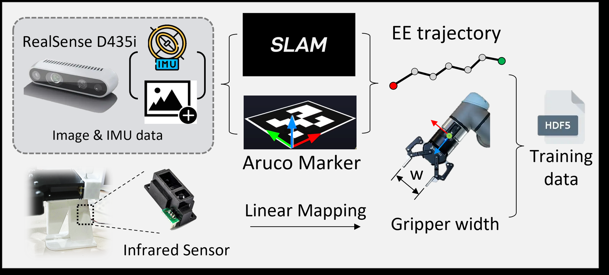
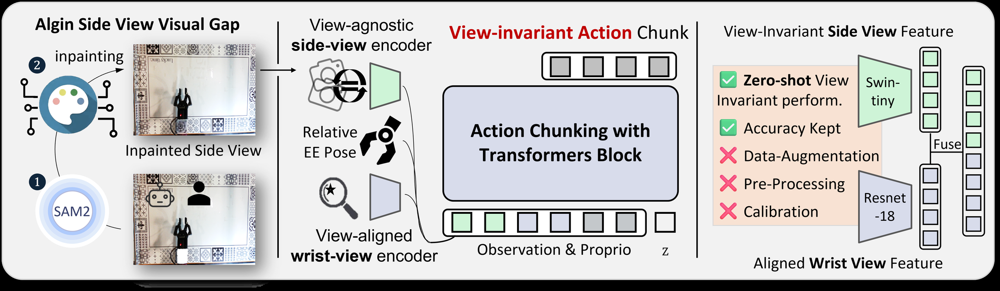
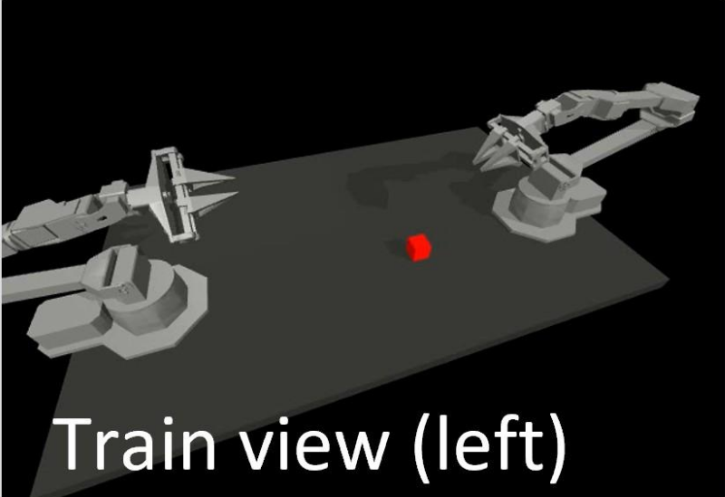
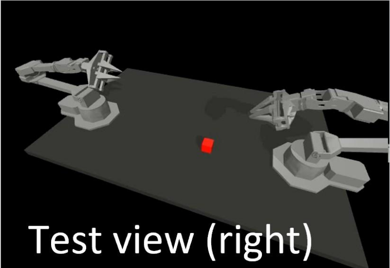
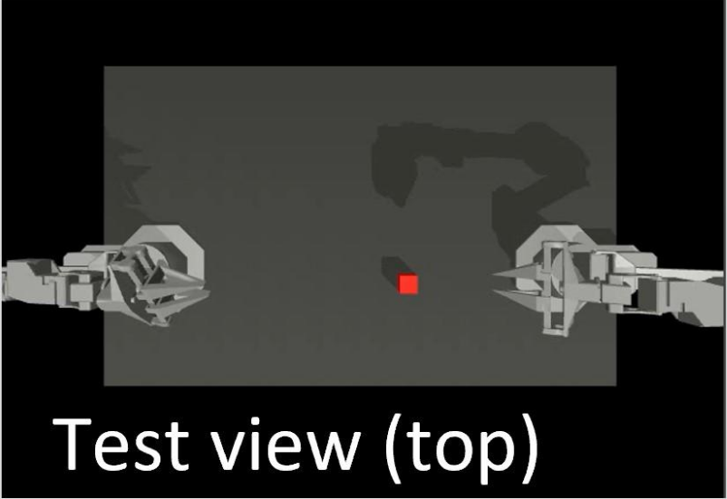

1Shanghai Jiao Tong University
IEEE International Conference on Robotics and Automation (ICRA) 2026
† Corresponding author
Recent advances in robot learning have motivated integrated pipelines that combine hardware for data collection with imitation learning algorithms. Existing data collection methods like leader-follower, VR/AR, and exoskeletons rely on costly hardware and exhibit limited scalability, while imitation learning algorithms built on them remain highly sensitive to viewpoint shifts, further constraining generalizability. Hand-held grippers provide a low-cost, robot-agnostic alternative, but prior systems bypass exocentric view alignment by relying solely on wrist-mounted cameras, resulting in narrowed observation and reduced policy robustness.

We propose VIL, a framework pairing a customized handheld gripper with a zero-shot, view-invariant imitation learning algorithm, bridging the handheld gripper with arbitrary exocentric views. Our approach employs adapters for appearance alignment and a hybrid encoder design to extract viewpoint-agnostic representations for an ACT-based policy, enabling robust execution across diverse perspectives. We further optimize the data collection pipeline and validate the system in both simulation and real-world tasks. Experiments show that VIL achieves stable performance under viewpoint shifts, challenging low-horizon scenarios, and dynamic perspectives, outperforming SOTA methods and demonstrating a scalable pipeline for manipulator-agnostic, view-invariant policy learning.

Our handheld gripper pipeline is inspired by UMI, but follows the template of the Robotiq 2F-85, a mature universal gripper that is widely adopted in robotics research. This choice facilitates compatibility with existing large-scale datasets, such as RoboSet and DROID, thereby enabling future pretraining or co-training with policies developed on the same gripper hardware.
We embed an infrared sensor in the handle to monitor trigger motion, which is then mapped to gripper width. Global scene context comes from a third-person camera, an Intel RealSense D435i, which removes the need for the fisheye optics earlier handheld rigs depend on. End-effector pose is recovered from two complementary sources: SLAM tracks reliably while the gripper is still far from the target, and the ArUco marker is more accurate through the final approach, so together they cover the full trajectory.
Unplug the Plug
Store Cube
Arrange Cup

VIL builds on ACT, which already handles multi-view input and emits long-horizon action chunks; what VIL adds is the machinery that keeps those inputs usable when the camera moves. Exocentric observations go first through a segment-inpainting module that strips out the manipulator and the human operator, closing the appearance gap between a demonstration collected by hand and a rollout executed by a robot arm. The aligned exocentric view and the egocentric view then pass through a hybrid feature encoder — each embedded by the backbone suited to it — to yield viewpoint-agnostic representations, which the ACT block turns into view-invariant actions.
Comparing backbones systematically, we found the Swin Transformer generalizes to unseen viewpoints far better than ResNet or ViT. Its relative positional bias and shifted-window attention loosen the tie to absolute pixel coordinates, so it reasons about object state within a shifted scene rather than a fixed layout, and its hierarchical stages fold local cues into global context. Swin-T is weaker on close-range fine detail, so the egocentric view keeps a ResNet encoder — each view gets the backbone it suits.
Demonstrations are collected with a human hand on the gripper; rollouts are executed with a robot arm. The gripper itself carries the task signal, while the manipulator around it carries almost none and can act as a distractor. A gripper-centric module segments every non-gripper region and inpaints it back to background, so the exocentric view looks the same at training and at deployment — and the same policy transfers across manipulators.
We adopt two simulation tasks introduced in ACT, cube transfer and bimanual insertion. For each task, we collect 50 demonstrations with rendered wrist and side views for training.
Cube Transfer
Bimanual Insertion
During testing, policies are evaluated under three progressively challenging view conditions:



We conduct three real-world tasks to verify that our proposed VIL pipeline with added exocentric views generates a view-agnostic, functional and stable policy in the real world. We use our own designed handheld gripper for data collection, select 50 valid demonstrations each for training, and use a JAKA-Zu3 robot arm as the manipulator during inference.
This task evaluates the policy's ability to generalize to novel exocentric viewpoints in a zero-shot manner. The robot must precisely unplug a plug from either the left or right socket port, where small grasping errors can cause the plug to jam.
This task evaluates whether the policy can effectively utilize exocentric observations when the egocentric view is insufficient to determine the task state. The robot must locate a cube, place it into a drawer, and close the drawer, requiring global visual information to disambiguate the cube's location and task progression.
This task evaluates the policy's ability to maintain stable execution under continuously changing exocentric viewpoints. The robot must transfer a cup from the desk to a coaster while a human-held camera continuously shifts viewpoint, with a ball placed on the desk to expose action vibrations and instability.
In simulation, VIL matches the baselines under aligned views and separates from them as soon as the exocentric camera moves. ACT achieves 93.3% on Transfer Cube and 50.0% on Insertion when the evaluation view matches training, but drops to 3.3% and 1.7% under a novel viewpoint. Diffusion Policy follows the same trend, dropping from 76.7% to 18.3% on Transfer Cube and from 43.3% to 13.3% on Insertion. In contrast, VIL remains nearly unchanged, improving from 91.7% to 93.3% on Transfer Cube and decreasing only from 56.7% to 53.3% on Insertion. The encoder ablations support the hybrid design. Under novel viewpoints, Swin-T alone achieves 76.7% / 33.3% on Transfer Cube / Insertion, compared with 23.3% / 20.0% for ResNet-50 and 1.7% / 5.0% for ViT-S. The full hybrid encoder reaches 93.3% / 53.3%, These results support using ResNet for fine-grained egocentric details and Swin-T for view-invariant exocentric features.
The real-world results carry the same pattern onto handheld-gripper data. On the plug task VIL holds 80% when the evaluation viewpoint differs from training, where ACT falls to 20%. On the long-horizon cube task, removing the exocentric view does not merely degrade the policy — it degenerates into a shortcut that skips the pick entirely and only learns to close the drawer, scoring 0/30. And under a continuously moving hand-held camera, VIL still completes the cup task 7 times out of 10.
@inproceedings{li2026vil,
title = {Zero-Shot Exocentric View-Invariant Imitation Learning (VIL): Bridging Handheld Gripper and Arbitrary Exocentric Views},
author = {Li, Boyan and Meng, Peilin and Liu, Chang and Chen, YuLin and Zhou, Qi and Bi, Youyi},
booktitle = {IEEE International Conference on Robotics and Automation (ICRA)},
year = {2026}
}